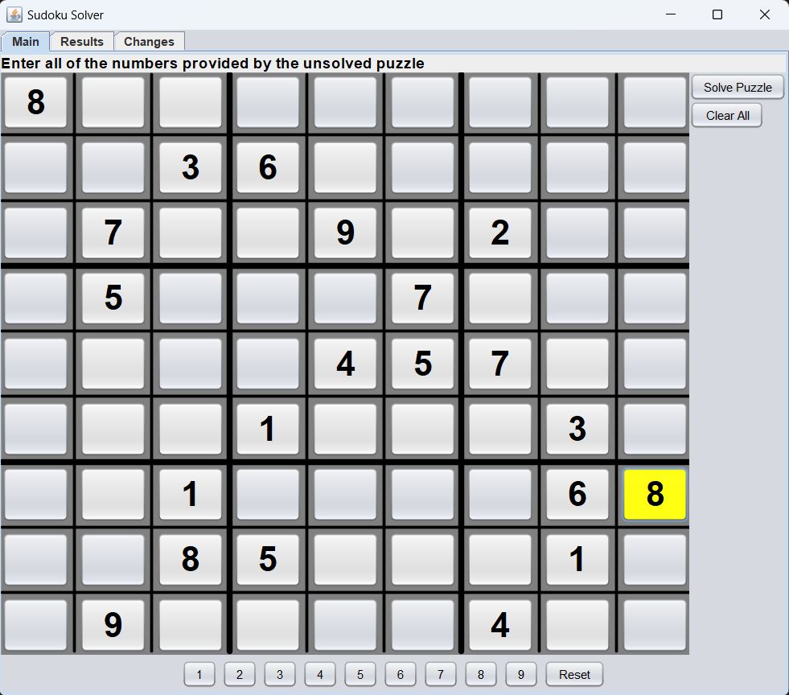
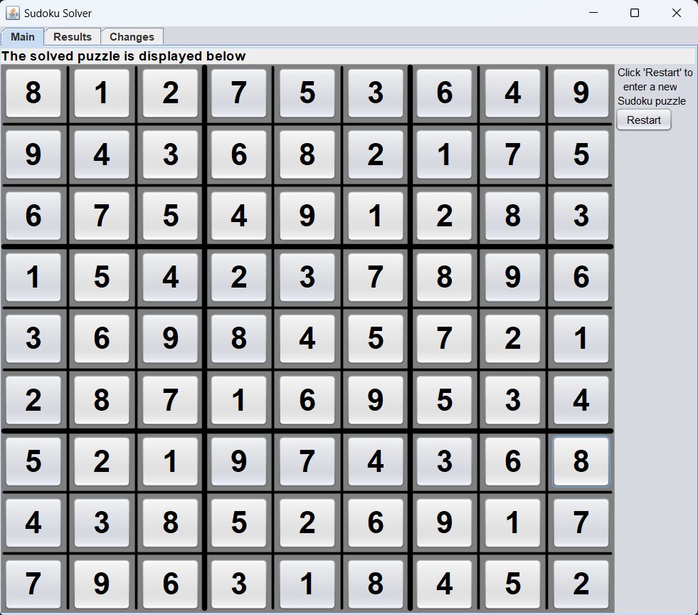

About Me
Hi, I'm Ethan! I'm a mechanical engineer with three years of service as an officer in the United States Air Force. I've worked in several different jobs, such as being the subject matter expert for the T-6 air conditioning and pressurization systems. I'm currently stationed at Tinker Air Force Base, Oklahoma, but my hometown is New Athens, Illinois, a small town near St. Louis, Missouri.
I'm currently working on transitioning careers to the civilian sector as a software developer. I'm working through a Full-Stack Engineer certification via Codecademy, with relevant coursework including: HTML, CSS, JavaScript, Git & GitHub, React, Redux, Express.js, PostreSQL, Swagger, OpenAPI, and DevOps Fundamentals. As of November 2023, I am 29% complete with an expected completion date of Spring 2024.
On a personal note, I'm happily married to my wife, Nicole, since August 2020. We have a beautiful 1 year old son named Trevor with another boy on the way. We have a 4 year old labrador retriever named Apollo who loves to go on walks and play tug-o-war!


Projects
Sudoku Solver Java Program
This program can solve any valid classic Sudoku puzzle, display the solved puzzle, show a results breakdown of which methods were used, and has a tab that walks you through how the puzzle was solved step by step.
Check this out on my GitHub page: SudokuSolver
Initial Puzzle
Solved Puzzle
Results Breakdown
Changes Walkthrough

Skills
HTML
CSS
JavaScript
Java
Python
Git
GitHub
Node.js